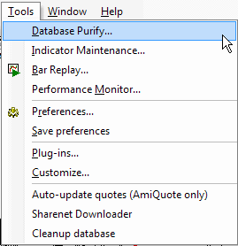

Database Purify
Database purify tool allows to detect missing/extra quotes, possible splits, or invalid OHLC relationships.
Indicator Maintenance
Opens Indicator Maintenance wizard that helps to clean up unused indicator space.
Bar Replay
Opens Bar Replay tool, which allows to replay
historical data.
Preferences
Opens Preferences window that allows you to configure the program.
Save Preferences
Saves all preference changes (the information is stored in broker.prefs file).
Plugins
Opens Plugins window. It contains a list of all loaded plug-in DLLs and can be used to inspect which plugins are active. It's also possible to unload plugins.
Customize
The Customize tools dialog allows you to define custom tools that can be invoked from the Tools menu.
Auto-update quotes
The Auto-update quotes option updates historical quotes from the last date present in AmiBroker up to today using AmiQuote Downloader. A detailed description on how to use AmiQuote to obtain free quotes can be found in the 'Automatic update of EOD quotes' tutorial chapter.
Sharenet Downloader
Launches the script that downloads quotes from Sharenet (South Africa only).
Export to CSV file
Runs a script that exports the database to a CSV file. Note that you can use the Automatic Analysis window to export quotes much faster than using this script.
Cleanup database
Launches the script that allows you to find non-traded stocks in the database. The script automatically scans the database and checks the latest quote date. If it is old enough, the script will display a warning message and lets you decide whether the stock should be deleted. Additionally, the script can generate a list of "old" stocks and save it to a text file. Detailed information is available in the 05-2000 issue of the newsletter.